import numpy as np
import pandas as pd
import matplotlib.pyplot as plt
import seaborn as sns
import tsutils
tsutils.set_style()
pd.set_option("display.precision", 2)The dataset
Hourly concentrations of PM2.5 (fine particulate matter, µg/m³) in Beijing from 2010 to 2015, together with weather measurements. The main series, PM_US Post, comes from the monitor at the US Embassy; three further monitoring stations start reporting in 2013.
Chen, Song (2016). PM2.5 Data of Five Chinese Cities. UCI Machine Learning Repository. https://doi.org/10.24432/C52K58 — licensed CC BY 4.0.
PM2.5 is a good teaching series: it has daily and yearly cycles, sudden pollution episodes, weather drivers and real missing data. That's everything a textbook example leaves out.
1. From columns to timestamps
Let's look at the file exactly as it arrives.
raw = pd.read_csv("data/beijing_pm25.csv")
print(raw.shape)
raw.head()(52584, 18) No year month day hour season PM_Dongsi PM_Dongsihuan \ 0 1 2010 1 1 0 4 NaN NaN 1 2 2010 1 1 1 4 NaN NaN 2 3 2010 1 1 2 4 NaN NaN 3 4 2010 1 1 3 4 NaN NaN 4 5 2010 1 1 4 4 NaN NaN PM_Nongzhanguan PM_US Post DEWP HUMI PRES TEMP cbwd Iws \ 0 NaN NaN -21.0 43.0 1021.0 -11.0 NW 1.79 1 NaN NaN -21.0 47.0 1020.0 -12.0 NW 4.92 2 NaN NaN -21.0 43.0 1019.0 -11.0 NW 6.71 3 NaN NaN -21.0 55.0 1019.0 -14.0 NW 9.84 4 NaN NaN -20.0 51.0 1018.0 -12.0 NW 12.97 precipitation Iprec 0 0.0 0.0 1 0.0 0.0 2 0.0 0.0 3 0.0 0.0 4 0.0 0.0
Time is spread across four integer columns. pd.to_datetime can assemble a timestamp directly from a DataFrame whose columns are named year, month, day (and optionally hour, minute, second):
timestamps = pd.to_datetime(raw[["year", "month", "day", "hour"]])
timestamps.head()0 2010-01-01 00:00:00 1 2010-01-01 01:00:00 2 2010-01-01 02:00:00 3 2010-01-01 03:00:00 4 2010-01-01 04:00:00 dtype: datetime64[us]
Now we make those timestamps the index, drop the columns we no longer need and give the rest short, consistent names.
names = {
"PM_US Post": "pm25",
"PM_Dongsi": "pm25_dongsi",
"PM_Dongsihuan": "pm25_dongsihuan",
"PM_Nongzhanguan": "pm25_nongzhanguan",
"TEMP": "temp",
"DEWP": "dew_point",
"HUMI": "humidity",
"PRES": "pressure",
"cbwd": "wind_dir",
"Iws": "cum_wind_speed",
"precipitation": "precip",
"Iprec": "cum_precip",
}
df = (
raw.set_index(timestamps)
.rename_axis("timestamp")
.rename(columns=names)[list(names.values())]
)
df.info()<class 'pandas.DataFrame'> DatetimeIndex: 52584 entries, 2010-01-01 00:00:00 to 2015-12-31 23:00:00 Data columns (total 12 columns): # Column Non-Null Count Dtype --- ------ -------------- ----- 0 pm25 50387 non-null float64 1 pm25_dongsi 25052 non-null float64 2 pm25_dongsihuan 20508 non-null float64 3 pm25_nongzhanguan 24931 non-null float64 4 temp 52579 non-null float64 5 dew_point 52579 non-null float64 6 humidity 52245 non-null float64 7 pressure 52245 non-null float64 8 wind_dir 52579 non-null str 9 cum_wind_speed 52579 non-null float64 10 precip 52100 non-null float64 11 cum_precip 52100 non-null float64 dtypes: float64(11), str(1) memory usage: 5.2 MB
Why go to this trouble? Once the index holds real timestamps, pandas understands time everywhere: selection by date, resampling, time-based rolling windows, date-aware plot axes and alignment when two series are combined. A plain integer index gives you none of that.
Sanity-check the values, not just the types
info() says every column is numeric, but that doesn't mean every number is real. Raw sensor and weather files often use sentinel codes such as 999, 9999 or 999990 to mean "missing". Taking a mean over them quietly produces nonsense. The fastest check is the range of each column:
df.describe().T[["min", "max"]]min max pm25 1.00 994.0 pm25_dongsi 3.00 737.0 pm25_dongsihuan 3.00 672.0 pm25_nongzhanguan 3.00 844.0 temp -19.00 42.0 dew_point -40.00 28.0 humidity 2.00 100.0 pressure 991.00 1046.0 cum_wind_speed 0.45 585.6 precip 0.00 999990.0 cum_precip 0.00 999990.0
One value jumps out: an hourly precipitation of 999,990 mm, a thousand metres of rain in one hour. It's a missing-data code. Let's find it and replace it with NaN, so every later calculation treats it as missing:
sentinel = df["precip"] >= 999990
print(df.loc[sentinel, ["precip", "cum_precip"]])
df.loc[sentinel, ["precip", "cum_precip"]] = np.nanprecip cum_precip timestamp 2015-11-07 13:00:00 999990.0 999990.0
A single bad hour in 52,584 may seem harmless. But it inflates the standard deviation of hourly precipitation from under 1 mm to over 4,000 mm, which silently breaks anything that scales or standardises that column, as we'll see when weather enters the models in chapter 07.
2. Is the index healthy? Three checks
Most time-series tools quietly assume three things about the index. It's worth checking them every time you load new data:
- Sorted. Time moves forward.
- Unique. Each timestamp appears once.
- Regular. Observations are evenly spaced, so a frequency can be inferred.
def check_index(frame):
idx = frame.index
print(f"sorted: {idx.is_monotonic_increasing}")
print(f"unique: {idx.is_unique}")
print(f"frequency: {pd.infer_freq(idx) if idx.is_monotonic_increasing else 'n/a (unsorted)'}")
check_index(df)sorted: True unique: True frequency: h
This file happens to be in good shape. Real data often isn't, so let's damage a copy on purpose and practise the repair. We'll shuffle it, delete 2% of the rows and duplicate a few others.
damaged = df.sample(frac=0.98, random_state=0) # shuffled, 2% of rows gone
damaged = pd.concat([damaged, damaged.iloc[:5]]) # five duplicated timestamps
check_index(damaged)sorted: False unique: False frequency: n/a (unsorted)
The repair takes three steps, in this order. asfreq refuses to run while duplicates exist, so they must go first.
repaired = damaged.sort_index()
repaired = repaired[~repaired.index.duplicated(keep="first")]
repaired = repaired.asfreq("h") # re-inserts every missing hour as a row of NaN
check_index(repaired)
print(f"\nrows: {len(damaged):,} damaged -> {len(repaired):,} repaired")sorted: True unique: True frequency: h rows: 51,537 damaged -> 52,584 repaired
Deleted rows don't disappear quietly.
asfreqturns every missing timestamp back into a visible row ofNaN. That is exactly what you want: a gap you can see is a gap you can deal with.
We'll finish by fixing the frequency on our real frame as well, so df.index.freq is set.
df = df.asfreq("h")
df.index.freq<Hour>
3. Selecting by time
A DatetimeIndex accepts partial date strings. Give it a year, a month or a day, and it returns everything inside that period.
pm = df["pm25"]
print(len(pm.loc["2014"]), "hours in 2014")
print(len(pm.loc["2014-02"]), "hours in February 2014")
pm.loc["2014-02-10":"2014-03-05"].plot(title="PM2.5, 10 Feb – 5 Mar 2014", ylabel="µg/m³");8760 hours in 2014 672 hours in February 2014
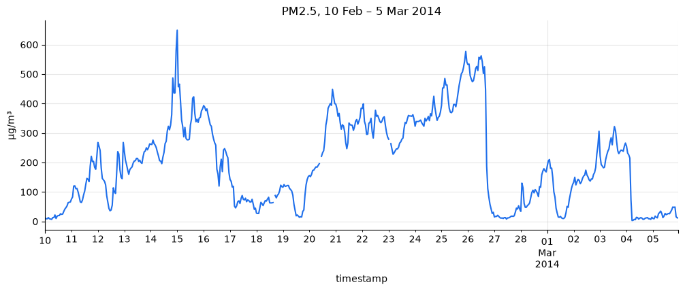
Winter smog in Beijing tends to build up over several days while stagnant air traps pollutants, then clears within hours when a cold northerly wind arrives. Look for that saw-tooth shape: slow climbs followed by sharp drops.
You can also filter on components of the timestamp, or on a time-of-day window:
weekends = pm[pm.index.dayofweek >= 5] # Saturday = 5, Sunday = 6
rush_hour = pm.between_time("07:00", "09:00")
print(f"weekend hours: {len(weekends):,}")
print(f"07:00-09:00 hours: {len(rush_hour):,}")weekend hours: 15,024 07:00-09:00 hours: 6,573
4. Gaps: find them, measure them, then decide
"Fill the missing values" is not a single decision. A one-hour sensor glitch and a week-long outage call for completely different treatment, so start by measuring.
print(f"{pm.isna().mean():.1%} of hourly readings are missing")
(df.filter(like="pm25")
.isna()
.resample("MS").mean()
.mul(100)
.plot(title="Share of hours missing, by month", ylabel="%"));4.2% of hourly readings are missing
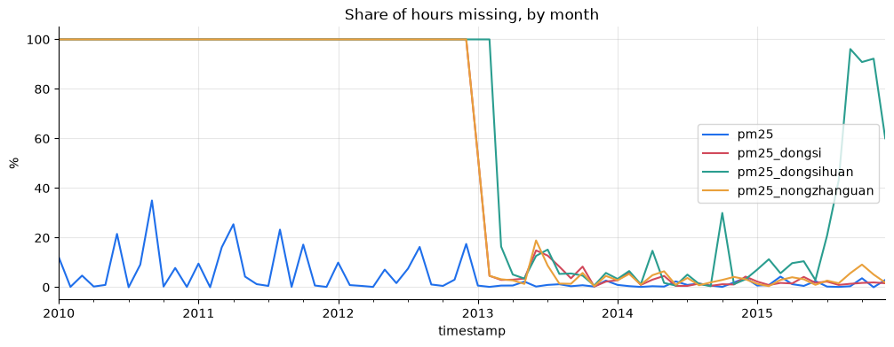
The plot shows two kinds of missingness. The US Embassy series (pm25) has scattered gaps. The other three stations are missing everything before 2013, because they didn't exist yet. Treat "not yet measured" separately from "sensor failed". Never interpolate across it.
Next, the length of each gap. A gap is a run of consecutive NaNs. The trick is to label each run with a counter that increases every time the series switches between missing and present.
def find_gaps(s):
"""Return one row per run of consecutive NaNs: its start time and length."""
is_na = s.isna()
run_id = (is_na != is_na.shift()).cumsum()
runs = pd.DataFrame({"start": s.index, "run": run_id.to_numpy(), "na": is_na.to_numpy()})
gaps = (runs[runs["na"]]
.groupby("run")
.agg(start=("start", "first"), hours=("start", "size")))
return gaps.sort_values("hours", ascending=False).reset_index(drop=True)
gaps = find_gaps(pm)
print(f"{len(gaps)} gaps; {(gaps['hours'] == 1).mean():.0%} of them last a single hour")
gaps.head()253 gaps; 53% of them last a single hour
start hours
0 2010-09-21 04:00:00 155
1 2012-12-23 05:00:00 127
2 2011-10-03 12:00:00 99
3 2011-03-17 20:00:00 91
4 2010-09-27 16:00:00 76
Which filling method works best? Test it, don't guess
We can test this directly. Take stretches where we know the true values, hide them, fill them back in with each method and measure the error. We'll repeat for gaps of different lengths.
def masking_experiment(s, gap_hours, n_gaps=200, seed=0):
"""Hide blocks of known values, refill them, and report each method's MAE."""
rng = np.random.default_rng(seed)
values = s.to_numpy()
starts = rng.choice(np.arange(24, len(s) - gap_hours), size=n_gaps, replace=False)
starts = [i for i in starts if not np.isnan(values[i:i + gap_hours]).any()]
hidden = s.copy()
for i in starts:
hidden.iloc[i:i + gap_hours] = np.nan
mask = hidden.isna() & s.notna()
fills = {
"forward fill": hidden.ffill(),
"time interpolation": hidden.interpolate(method="time"),
"same hour yesterday": hidden.fillna(hidden.shift(24)),
}
return pd.Series({name: (f[mask] - s[mask]).abs().mean() for name, f in fills.items()})
results = pd.DataFrame({h: masking_experiment(pm.loc["2014"], h) for h in [1, 3, 6, 12, 24]}).T
results.index.name = "gap length (hours)"
resultsforward fill time interpolation same hour yesterday gap length (hours) 1 11.28 7.51 63.63 3 19.10 10.74 64.32 6 28.45 17.50 63.76 12 37.78 24.51 65.05 24 58.53 41.97 68.86
results.plot(marker="o", title="Error when refilling hidden values", ylabel="MAE (µg/m³)");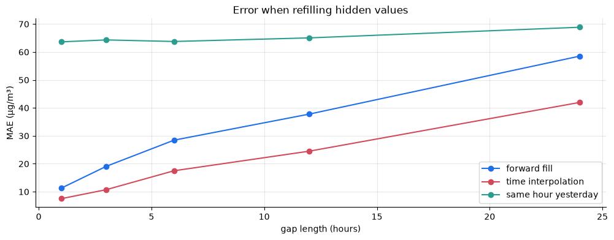
What the experiment shows:
- Every method gets worse as the gap grows. Interpolation's error rises several-fold between a 1-hour and a 24-hour gap. Past a few hours you are no longer recovering data; you are inventing it.
- Time interpolation wins at every length here, because it uses the readings on both sides of the gap.
- "Same hour yesterday" is poor even for one-hour gaps. In this series, a smog episode arriving or clearing changes the level from one day to the next far more than the daily cycle does. This is a data-specific result. On a series dominated by its daily cycle, such as electricity demand, the ranking could flip. That's why you test instead of assuming.
So a sensible policy is: interpolate short gaps and leave long ones as NaN. limit_area="inside" stops pandas from extrapolating past the first or last real value.
pm_filled = pm.interpolate(method="time", limit=3, limit_area="inside")
print(f"missing before: {pm.isna().sum():,} after: {pm_filled.isna().sum():,}")missing before: 2,197 after: 1,743
⚠️ Two caveats:
limit=3fills up to three values inside any gap, including the first three hours of the six-day outage we found above. Exercise 2 asks you to write a stricter version.- Interpolation uses values from after the gap. That is fine for cleaning history you want to describe, but it is leakage if you later build forecasting features from the filled series. We'll come back to this in the forecasting chapters.
5. Resampling: changing the frequency
resample groups the index into time bins and then needs to know how to summarise each bin. The choice of summary is a modelling decision, not a formality.
daily = pm_filled.resample("D").agg(["mean", "max", "count"])
daily.head()mean max count timestamp 2010-01-01 129.00 129.0 1 2010-01-02 144.33 181.0 24 2010-01-03 78.38 107.0 24 2010-01-04 29.29 58.0 24 2010-01-05 43.54 106.0 24
The count column earns its place here. A daily mean built from only three readings is not comparable with one built from twenty-four. A common rule is to require most of the day to be present:
daily_mean = daily["mean"].where(daily["count"] >= 18)
print(f"days rejected for too few readings: {daily_mean.isna().sum() - daily['mean'].isna().sum()}")days rejected for too few readings: 56
monthly_mean = pm_filled.resample("MS").mean()
fig, axes = plt.subplots(3, 1, figsize=(12, 8), sharex=True)
pm_filled.plot(ax=axes[0], lw=0.3, title="hourly")
daily_mean.plot(ax=axes[1], lw=0.6, title="daily mean")
monthly_mean.plot(ax=axes[2], marker="o", title="monthly mean")
for ax in axes:
ax.set_ylabel("µg/m³")
fig.tight_layout();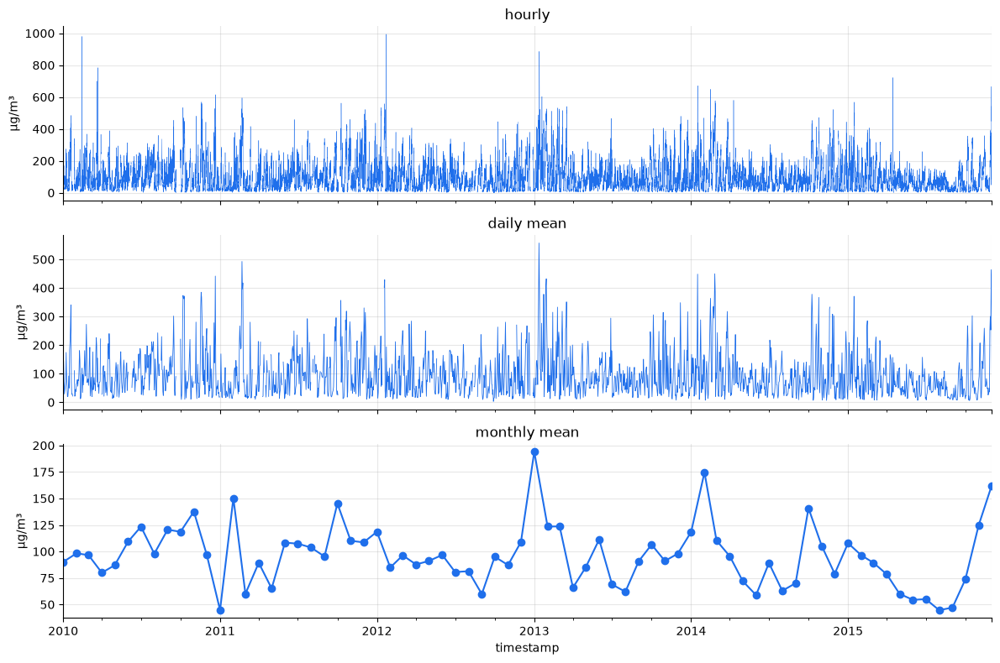
Each level of aggregation shows something different. The hourly data shows individual episodes, the daily series shows their rhythm, and the monthly means show a rough annual rhythm, with higher peaks in the cold months. It's noisy from year to year, though, and section 8 shows it's less simple than "winters are dirtier".
Going the other way (upsampling) creates empty slots that you have to fill yourself. Remember that upsampling can't create information. It only spreads out what you already had.
monthly_mean.loc["2014"].resample("D").asfreq().head(3) # new days are NaNtimestamp 2014-01-01 118.46 2014-01-02 NaN 2014-01-03 NaN Freq: D, Name: pm25, dtype: float64
monthly_mean.loc["2014"].resample("D").interpolate().head(3) # ...unless you fill themtimestamp 2014-01-01 118.46 2014-01-02 120.27 2014-01-03 122.08 Freq: D, Name: pm25, dtype: float64
6. Rolling windows: trailing vs. centred
A rolling window summarises the last n observations (or the last n hours, when you pass a time string like "24h"). The detail that matters most is where the window sits relative to the point it describes.
nov = pm_filled.loc["2014-11"]
ax = nov.plot(alpha=0.35, label="hourly")
nov.rolling("24h").mean().plot(ax=ax, label="trailing 24 h mean")
nov.rolling(24, center=True).mean().plot(ax=ax, label="centred 24 h mean")
ax.set(title="November 2014", ylabel="µg/m³")
ax.legend();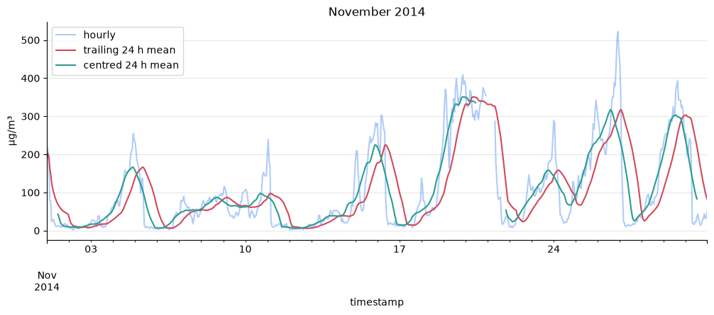
The centred window follows the data more closely because it can see the future. Each value averages twelve hours before and twelve hours after. That's fine for describing history, but at forecast time those future hours don't exist yet, so any feature a forecasting model uses must come from a trailing window. The trailing line lags behind the data, and that lag is the honest price of using only the past.
Rolling windows aren't limited to the mean. A rolling standard deviation shows when a series becomes more volatile:
ax = daily_mean.rolling(30, min_periods=20).std().plot(title="30-day rolling standard deviation of daily PM2.5")
ax.set_ylabel("µg/m³");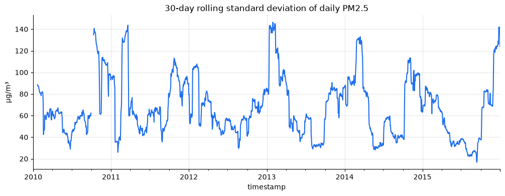
7. Lags and differences
shift(k) moves the values k steps later in time, so each row lines up with the value from k steps before it. That's all a lag is. diff(k) is the change over k steps: x - x.shift(k).
lags = pd.DataFrame({
"pm25": pm_filled,
"lag_1h": pm_filled.shift(1),
"lag_24h": pm_filled.shift(24),
"lag_168h": pm_filled.shift(168), # one week
}).dropna()
lags.corr()["pm25"].round(2)pm25 1.00 lag_1h 0.97 lag_24h 0.41 lag_168h 0.04 Name: pm25, dtype: float64
The value one hour ago is an excellent predictor of the value now. The value 24 hours ago is much weaker, and the value one week ago tells you almost nothing: this series has no weekly rhythm. This correlation between a series and its own past is called autocorrelation, and much of forecasting is about exploiting it. Chapter 06 studies it properly.
A lag plot shows the same relationship as a picture:
fig, axes = plt.subplots(1, 2, figsize=(10, 4), sharey=True)
for ax, k in zip(axes, [1, 24]):
ax.scatter(pm_filled.shift(k), pm_filled, s=1, alpha=0.1)
ax.set(title=f"lag {k} h", xlabel=f"PM2.5 at t − {k}", ylabel="PM2.5 at t")
fig.tight_layout();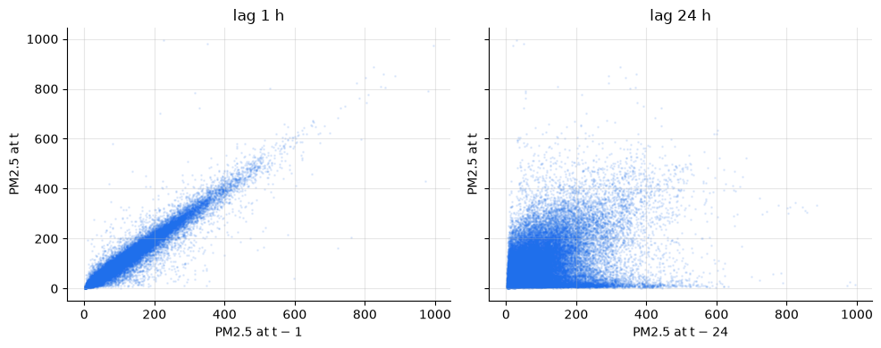
Two kinds of shift.
shift(1)moves the values and keeps the index;shift(freq="1D")moves the index and keeps the values. The second is handy for aligning two series recorded on different clocks.
8. Calendar features and seasonal profiles
Timestamp components such as hour, weekday and month let you group the data and ask where the regular patterns are. PM2.5 is right-skewed (a few extreme episodes), so we summarise with the median, which those episodes can't drag around.
cal = pd.DataFrame({
"pm25": pm_filled,
"hour": pm_filled.index.hour,
"weekday": pm_filled.index.day_name(),
"month": pm_filled.index.month,
"year": pm_filled.index.year,
})
fig, axes = plt.subplots(1, 2, figsize=(13, 4))
cal.groupby("hour")["pm25"].median().plot(ax=axes[0], marker="o",
title="Median by hour of day", ylabel="µg/m³")
sns.boxplot(data=cal, x="month", y="pm25", showfliers=False, ax=axes[1], color="#1f6feb")
axes[1].set_title("Distribution by month (outliers hidden)")
fig.tight_layout();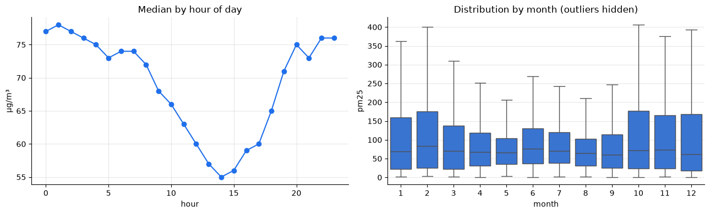
The monthly boxes have similar medians, but their upper halves are very different. A median-only summary would miss the seasonal story entirely, so let's put several summaries side by side.
by_month = cal.groupby("month")["pm25"].agg(
median="median",
mean="mean",
p90=lambda s: s.quantile(0.9),
pct_above_250=lambda s: (s > 250).mean() * 100,
)
by_month.round(0)median mean p90 pct_above_250 month 1 69.0 114.0 294.0 12.0 2 84.0 121.0 292.0 14.0 3 71.0 97.0 227.0 7.0 4 68.0 83.0 171.0 2.0 5 66.0 77.0 148.0 1.0 6 76.0 89.0 180.0 1.0 7 71.0 87.0 182.0 2.0 8 64.0 74.0 145.0 1.0 9 60.0 78.0 166.0 3.0 10 72.0 113.0 283.0 15.0 11 73.0 109.0 257.0 11.0 12 62.0 109.0 282.0 13.0
severe = cal.assign(severe=cal["pm25"] > 250).pivot_table(
index="year", columns="month", values="severe", aggfunc="mean") * 100
ax = sns.heatmap(severe, cmap="rocket_r", annot=True, fmt=".0f", cbar_kws={"label": "% of hours"})
ax.set_title("Share of hours above 250 µg/m³, by year and month");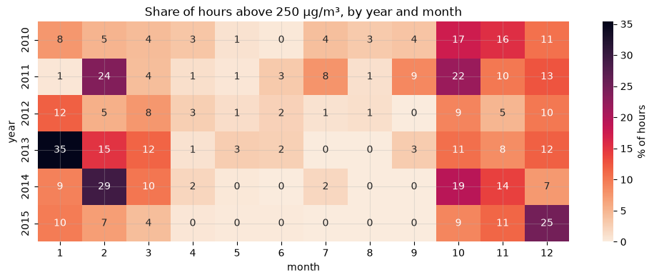
Things to notice:
- A daily cycle: concentrations are lowest in mid-afternoon and highest around midnight. Sunshine warms the ground during the day and mixes pollution up through a deep layer of air. At night that layer collapses and traps pollution near the surface.
- A seasonal cycle in the extremes, not the typical level. Median concentrations are similar all year round. What changes from October to February, Beijing's heating season, is how often severe episodes happen: hours above 250 µg/m³ are several times more common than in summer. (For scale, the WHO's 24-hour guideline is 15 µg/m³.) The mean captures this because it's pulled up by the extremes. The median ignores them.
- Variation between years on top of both cycles. The heatmap lets you compare the same month across years, and 2015 stands out as cleaner than the years before.
Seasonality that changes the size of fluctuations rather than the typical level is a key idea in chapter 02, where we separate a series into trend, seasonality and remainder and ask whether those parts add or multiply.
Seasonal subseries plot
A seasonal subseries plot separates two questions a single line chart mixes together: what does the typical year look like? and how has each part of the year changed? Each calendar month gets its own mini time series (January 2010, January 2011, …, January 2015), with a horizontal bar at that month's average. statsmodels draws it with month_plot (and quarter_plot for quarterly data).
from statsmodels.graphics.tsaplots import month_plot
fig, ax = plt.subplots(figsize=(12, 4))
month_plot(monthly_mean, ax=ax)
ax.set(title="Monthly mean PM2.5: each month's values from 2010 to 2015", ylabel="µg/m³");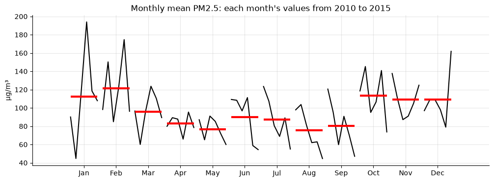
The bars trace the seasonal shape of the monthly means: higher from October to February, lower in late summer. The mini-lines show how each month has changed over the years, and they tell two stories a single line chart hides:
- Winter months swing about twice as widely from year to year as summer months. A winter monthly mean depends heavily on how many severe episodes that particular winter happened to have, which is the "seasonality in the extremes" from above, seen from a different angle.
- Every summer month, June to September, falls steadily across the six years, roughly halving from 2010 to 2015. The winter months show no such clear trend. The long-run improvement shows up first in the months without heating-season smog.
9. Several series at once: long and wide tables
Our file holds four PM2.5 series, one per monitoring station, side by side. That's the wide layout: one row per timestamp, one column per series. The alternative is the long layout: one row per (timestamp, series) pair, with a column saying which series it is. Neither is better. Different tools want different shapes, and converting between them is routine.
| Layout | Good for |
|---|---|
| Wide (a column per series) | aligning series on the same timestamps, correlations, arithmetic across series |
| Long (a row per observation) | groupby per series, plotting with hue=, stacking many series for one "global" model |
melt goes from wide to long, and pivot goes back. We use 2013–2015, when all four stations report.
stations = df.filter(like="pm25").loc["2013":"2015"]
long = (stations.reset_index()
.melt(id_vars="timestamp", var_name="station", value_name="concentration"))
print(long.shape)
long.head()(105120, 3)
timestamp station concentration
0 2013-01-01 00:00:00 pm25 31.0
1 2013-01-01 01:00:00 pm25 32.0
2 2013-01-01 02:00:00 pm25 21.0
3 2013-01-01 03:00:00 pm25 16.0
4 2013-01-01 04:00:00 pm25 15.0
# per-series summaries are one groupby away in the long layout
long.groupby("station")["concentration"].agg(["count", "median", "max"])count median max station pm25 25970 66.0 886.0 pm25_dongsi 25052 64.0 737.0 pm25_dongsihuan 20508 68.0 672.0 pm25_nongzhanguan 24931 62.0 844.0
# resampling each series separately: group by station, then resample within each group
monthly_by_station = (long.set_index("timestamp")
.groupby("station")["concentration"]
.resample("MS").mean()
.reset_index())
ax = sns.lineplot(data=monthly_by_station, x="timestamp", y="concentration", hue="station", marker="o")
ax.set(title="Monthly mean PM2.5 by station", xlabel="", ylabel="µg/m³");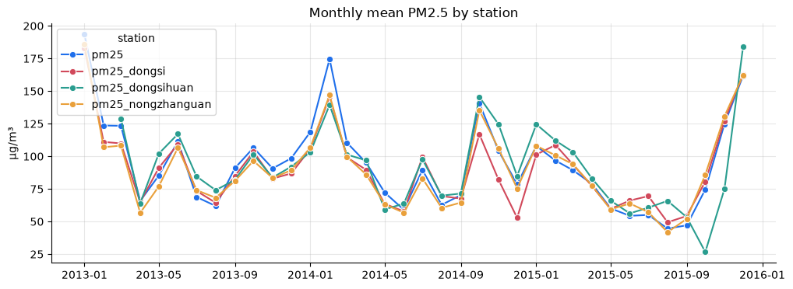
# and back to wide
wide = long.pivot(index="timestamp", columns="station", values="concentration")
print("round trip reproduces the original:", wide.equals(stations[wide.columns]))round trip reproduces the original: True
The four stations track each other closely, as Exercise 1 quantifies, so pollution in Beijing is largely a city-wide phenomenon. The two months that stand out have different causes. Dongsihuan's dip in October 2015 rests on just 68 of 744 hours, section 5's thin-bin problem again. Dongsi's low November 2014 is based on almost complete data, so it's a genuine disagreement between monitors, and those happen too. When one series departs from the others, check the counts before believing it. Keep the long layout in mind for chapter 09: machine-learning forecasters are often trained on many series at once, stacked in long form, which is one way to give them more data.
10. Time zones, briefly
Our timestamps are naive: they carry no time zone. That's fine for a single-city dataset, but combining sources recorded in different zones needs aware timestamps.
local = pm_filled.tz_localize("Asia/Shanghai") # declare what the clock already meant
print(local.index[:2])
print(local.tz_convert("UTC").index[:2]) # same instants, different wall-clock labelsDatetimeIndex(['2010-01-01 00:00:00+08:00', '2010-01-01 01:00:00+08:00'], dtype='datetime64[us, Asia/Shanghai]', name='timestamp', freq=None) DatetimeIndex(['2009-12-31 16:00:00+00:00', '2009-12-31 17:00:00+00:00'], dtype='datetime64[us, UTC]', name='timestamp', freq=None)
China doesn't observe daylight saving time, so this conversion is clean. In zones that do, one hour disappears each spring and one repeats each autumn. tz_localize then needs the ambiguous= and nonexistent= arguments to know what you mean.
11. From here on: tsutils.load_beijing()
Sections 1–2 (including the sentinel fix) are packaged in tsutils.load_beijing(), so later chapters can start from a clean hourly frame in one line. Gaps are deliberately left as NaN, because each chapter decides for itself how to handle them.
check = tsutils.load_beijing()
pd.testing.assert_frame_equal(check, df)
print("tsutils.load_beijing() reproduces this chapter's frame exactly.")tsutils.load_beijing() reproduces this chapter's frame exactly.
Exercises
Try each one before opening the solution.
Exercise 1: Four monitors, one city
Using 2013–2015 (when all four stations report), resample the four PM2.5 columns to daily medians.
- Which station has the highest overall median?
- How strongly are the stations correlated with each other? What does that suggest about whether pollution in Beijing is local or city-wide?
Solution
stations = df.filter(like="pm25").loc["2013":"2015"].resample("D").median()
print(stations.median().sort_values(ascending=False))
stations.corr().round(2)
Daily correlations between stations are typically very high (well above 0.9). Most day-to-day variation is shared across the city and driven by regional weather, not by anything happening near a single monitor.
Exercise 2: A stricter gap filler
Write fill_short_gaps(s, max_hours). It should interpolate gaps of at most max_hours completely and leave longer gaps entirely as NaN. Unlike interpolate(limit=...), it must not nibble at the edges of long gaps.
Hint: reuse the run-labelling trick from find_gaps, then use groupby(...).transform("size") to give every row the length of the run it belongs to.
Solution
def fill_short_gaps(s, max_hours):
is_na = s.isna()
run_id = (is_na != is_na.shift()).cumsum()
run_len = is_na.groupby(run_id).transform("size")
short_gap = is_na & (run_len <= max_hours)
filled = s.interpolate(method="time", limit_area="inside")
return s.where(~short_gap, filled)
strict = fill_short_gaps(pm, 3)
print(pm_filled.isna().sum(), "vs", strict.isna().sum()) # strict leaves more NaNs
Exercise 3: Is there a weekend effect?
Compare the median hourly profile (as in section 8) for weekdays and weekends on one plot. Is the difference large compared with the monthly differences? What else, besides traffic, could make weekends look different?
Solution
cal["day_type"] = np.where(pm_filled.index.dayofweek >= 5, "weekend", "weekday")
cal.pivot_table(index="hour", columns="day_type", values="pm25", aggfunc="median").plot(
marker="o", title="Median PM2.5 by hour", ylabel="µg/m³")
If anything, weekends come out slightly higher, by a few µg/m³. That's the opposite of what a "less traffic at weekends" story predicts, and the gap is small next to the seasonal differences in severe episodes. With only about 300 weekends in the data, a handful of multi-day smog episodes that happen to overlap weekends can create or hide a difference like this on their own. Weather is a confounder here. Comparing raw group medians can't separate a weekend effect from which weekends happened to be smoggy.
Exercise 4: Which way is the wind blowing?
wind_dir holds the combined wind direction (NW, NE, SE, or cv for calm/variable). Compute the median PM2.5 for each direction. Which wind brings the cleanest air, and why might that be?
Solution
df.assign(pm25=pm_filled).groupby("wind_dir")["pm25"].median().sort_values()
Northwesterly winds usually bring the cleanest air: dry, fast-moving air from the less populated north and west. Calm conditions and southerly winds let pollution build up. This is a first hint that external variables can help a forecast, an idea we use in the SARIMAX and machine-learning chapters.
Key takeaways
- Put time in the index. Everything time-aware in pandas depends on it.
- Check every column's range for sentinel codes like 999990 before trusting it.
- Check sorted → unique → regular, and repair in that order:
sort_index, drop duplicates,asfreq. - Measure gaps before filling them. Short gaps can be interpolated; long gaps should usually stay missing.
resampleneeds an aggregation, and the choice matters. Track counts so thin bins don't masquerade as full ones.- Anything a forecast will use must come from trailing windows and lags. Centred windows and interpolation peek at the future.
- Several series can live wide (a column each) or long (a row per observation).
meltandpivotconvert between them.
Next: 02 · Anatomy of a Time Series. We'll split a series into trend, seasonality and remainder, and learn when those components add and when they multiply.